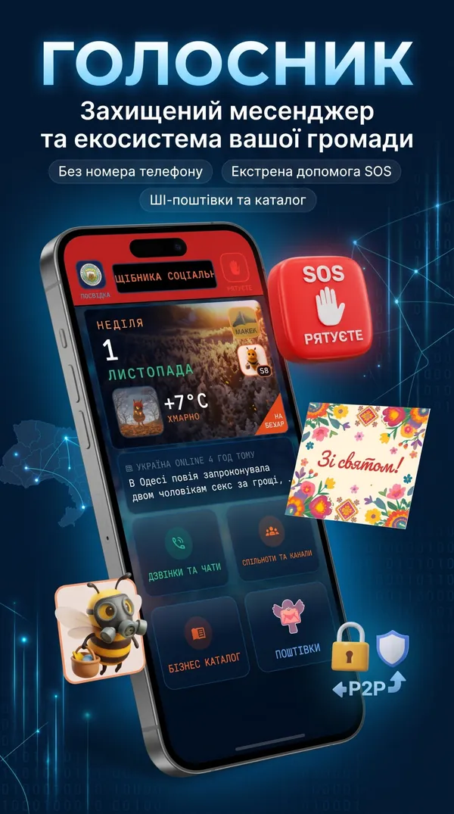

Головний екран
- Усе щоденне — на одному екрані: дата й погода вашого району, стрічка новин, повітряні тривоги.
- Внизу — плитки розділів: дзвінки та чати, спільноти та канали, бізнес-каталог, поштівки.
- Угорі завжди під рукою «Посвідка», рядок із тривогою чи погодою та кнопка «Рятуйте».
- Голос у пріоритеті: він тримається на слабкому мобільному інтернеті, коли відео вже не тягне.